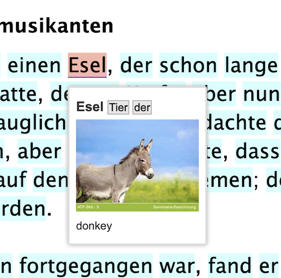

Overview
Anki exports are still in alpha/beta, as is this documentation.
The current beta release for Anki exports is 3.10.0b5 - double-check pypi for the latest.
Lute doesn’t have built-in flashcards for various reasons1, so it provides a way to export terms to Anki, a popular and free flashcard program.
In summary:
- You install Anki desktop and the AnkiConnect add-on (see LINK HERE)
- You define how Lute should export terms
- You export selected terms from the term listing or while reading.
Anki exports will only work on a machine that has Anki desktop and AnkiConnect installed. It doesn’t work from a mobile device.
A quick sample
After telling Lute how to export data, from the reading screen, you can hover over a term:
and hit a hotkey you define:

The data is exported to Anki per your export specification (deck and field mappings):

and Anki handles the flashcard generation and scheduling, according to how you've set it up, e.g.:
| Front | Back |
|---|---|
 |  |
A disclaimer :-)
Anki exports are tricky to handle it a general way:
- Usually, language data is fairly unstructured.
- Many users will have different needs.
- Different kinds of terms will require different kinds of Anki cards (for example, cards to test gender, verb tenses, etc.)
There's no simple way to do perfect exports in a general way, and some things might not be possible at all, without custom code!
Given the above, it might be best to look at Lute's Anki exports as a "first draft" for some Anki cards, which you can further refine, suspend, or delete as needed. From my experience, the cards are usually just fine, and I can make any other cards outside of Lute as usual.
these reasons are given in the FAQ -- basically, it's a ton of work!